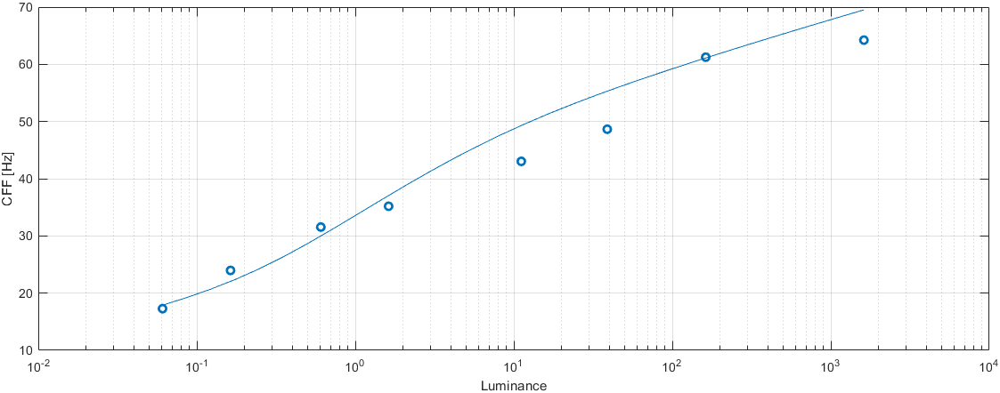

5-dimensional CSFs and CFF: spatial and temporal frequency, luminance, size and eccentricity
Fitting error
Model parameters
stelaCSF-HF
p.ach_sust.S_max = [ 45.4274 0.32037 0.206658 6.06267e-07 1.36797e+10 ];
p.ach_sust.f_max = [ 1.56527 31.6581 0.307638 ];
p.ach_sust.bw = 0.15959;
p.ach_sust.a = 0.0125462;
p.ach_trans.S_max = [ 7677.09 3.93629 0.526939 ];
p.ach_trans.f_max = 2.37824e-05;
p.ach_trans.bw = 3.17305;
p.ach_trans.a = 0.000271495;
p.sigma_trans = [ 0.00456233 0.121478 ];
p.sigma_sust = 11.7455;
p.ecc_drop = 0.0238035;
p.ecc_drop_nasal = 0.0170372;
p.ecc_drop_f = 0.0226253;
p.ecc_drop_f_nasal = 0.015118;
p.omega_trans_sl = 1.60598;
p.omega_trans_c = 4.29962;
↸CSF model: stelaCSF-HF
Legend
To keep the plots legible, only up to 3 models are plotted.
↸Dataset: [modelfest] ModelFest
Achromatic CSF as a function of frequency
↸Dataset: [hdrvdp_csf] HDR-VDP CSF
Achromatic CSF as a function of frequency
Achromatic CSF as a function of size
↸Dataset: [hdr_csf] High Dynamic Range CSF
CSF as the function of frequency at different luminance levels (fixed number of cycles)
CSF for different number of cycles
↸Dataset: [rovamo1993] Rovamo et al. 1993
CSF as the funcation of stimulus area
CSF as the function of spatial frequency
↸Dataset: [robson1966] Robson 1966
Spatial CSF for different temporal frequencies
Temporal CSF for different spatial frequencies
↸Dataset: [laird2006] Laird et al. 2006
Achromatic CSF as a function of temporal frequency for different spatial frequencies
↸Dataset: [snowden1995] Snowden et al. 1995
Temporal contrast sensitivity at different spatial frequencies and luminance levels
↸Dataset: [virsu1979] Virsu & Rovamo 1979
Contrast sensitivity of central and peripheral vision as a function of spatial frequency and eccentricity
↸Dataset: [virsu1982] Virsu et al. 1982
Contrast sensitivity as the function of frequency
↸Dataset: [wright1983] Wright and Johnson 1983
CSF as function of eccentricity
↸Dataset: [anderson1991] Anderson et al. 1991
Contrast sensitivity as the function of retinal visual field (at 8 Hz)
↸Dataset: [krajancich2021] Krajancich et al. 2021
Critical fusion frequency at eccentricities
CFF at luminance levels for 0.57 cpd
CFF at luminance levels, foveal vision (ecc=0)
↸Dataset: [hecht1933] Hecht 1933
CFF for white light as a function of luminance and eccentricity
↸Dataset: [hvei_cff2022] HVEI CFF 2022
CFF for white light as a function of luminance and eccentricity
↸Dataset: [deLange1958b] De Lange 1958
CFF for white light as a function of luminance

↸Dataset: [hartmann1979] Hartmann et al. 1979
CFF as a function of eccentricity at different luminance levels

CFF as a function of stimulus diameter